Command Reference
All commands use Discord slash command syntax. Click any command to see full details, usage examples, and screenshots.
Moderation
Syntax
Parameters
| Name | Type | Required | Description |
|---|---|---|---|
user | User | Yes | The user to ban |
duration | String | No | Duration of the ban. Omit for permanent. Formats: 1d, 2h, 30m, 1w, 12h30m |
reason | String | No | Reason for the ban (logged in mod history). Defaults to "No reason provided" |
Examples
/ban @John 7d Repeated rule violations — Bans John for 7 days/ban @Spammer — Permanently bans a user with no reason/ban @User 2h30m Cooling off — Bans for 2 hours and 30 minutesDetails
- Deletes the user's messages from the last 7 days when banning.
- If a duration is specified, the bot will automatically unban the user after the time expires.
- A DM notification is sent to the user (if
/punishment-dmis enabled), including the reason, duration, and an appeal button. - The action is logged to the mod history, accessible via
/hist. - Role hierarchy is enforced — you can only ban users with roles below yours.
Screenshot
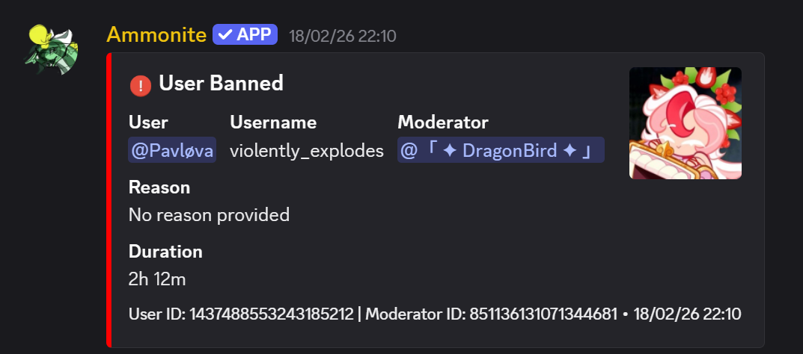
Example of the /ban command in action
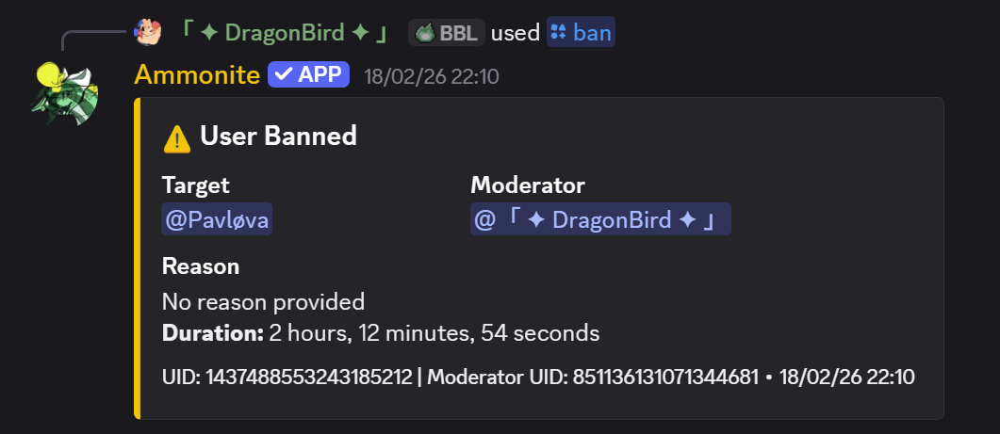
Feedback shown to the moderator executing /ban
Syntax
Parameters
| Name | Type | Required | Description |
|---|---|---|---|
user | User | Yes | The user to unban |
reason | String | No | Reason for unbanning |
Examples
/unban @John Appeal approvedDetails
- Removes the user from the server's ban list, allowing them to rejoin.
- The action is logged in moderation history.
Screenshot
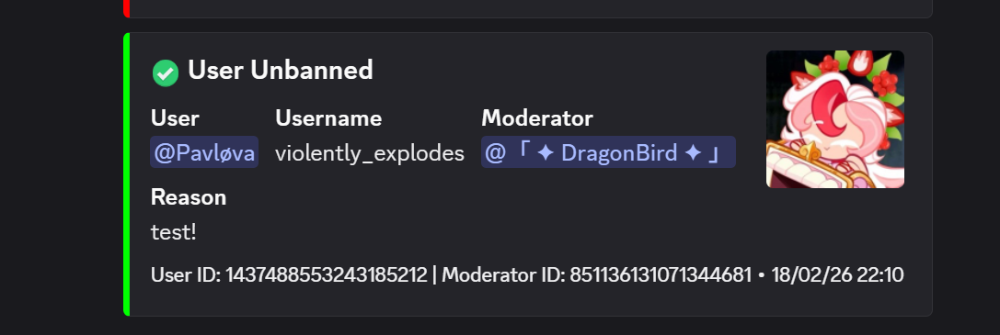
Example of the /unban command
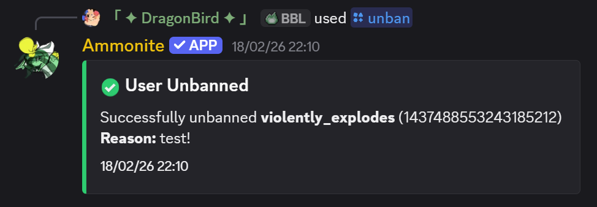
Feedback shown to the moderator executing /unban
Syntax
Parameters
| Name | Type | Required | Description |
|---|---|---|---|
user | User | Yes | The user to kick |
reason | String | No | Reason for the kick. Defaults to "No reason provided" |
Examples
/kick @John Breaking server rulesDetails
- The user is removed from the server but can rejoin with a new invite link.
- A DM notification is sent to the user if punishment DMs are enabled.
- Role hierarchy is enforced.
- Logged in moderation history and AutoLog channel.
Screenshot
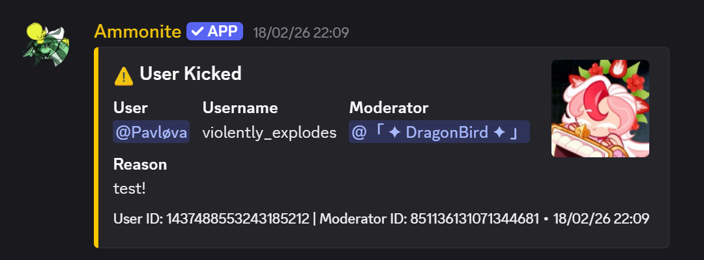
Example of the /kick command
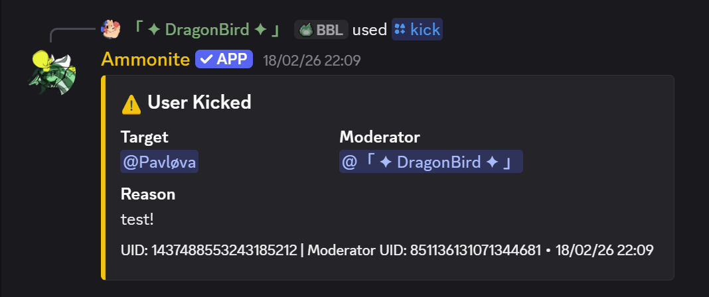
Feedback shown to the moderator executing /kick
Syntax
Parameters
| Name | Type | Required | Description |
|---|---|---|---|
user | User | Yes | The user to softban |
reason | String | No | Reason for the softban |
Examples
/softban @Spammer Cleaning up spam messagesDetails
- Bans the user (deleting their last 7 days of messages) and immediately unbans them.
- Effectively a "kick + message purge" — the user is removed and can rejoin, but their messages are cleaned up.
- Useful for dealing with spam raids or nuking a user's message history.
Screenshot

Example of the /softban command
Syntax
Parameters
| Name | Type | Required | Description |
|---|---|---|---|
user | User | Yes | The user to warn |
reason | String | No | Reason for the warning. Defaults to "No reason provided" |
Examples
/warn @John Please follow the rules/warn @User Spamming in chatDetails
- Adds a warning to the user's record. The total warning count is displayed in the response.
- Warnings are stored per-server and can be viewed with
/warns. - A DM notification is sent to the warned user if punishment DMs are enabled.
- Cannot warn bots. Role hierarchy is enforced.
Screenshot
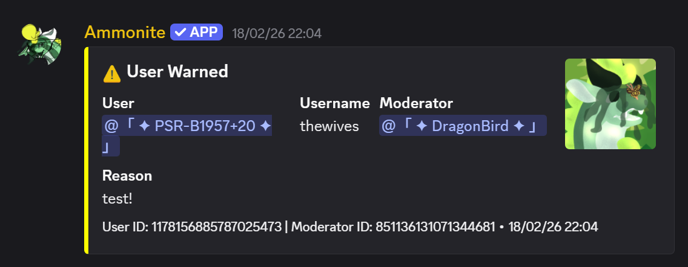
Example of the /warn command
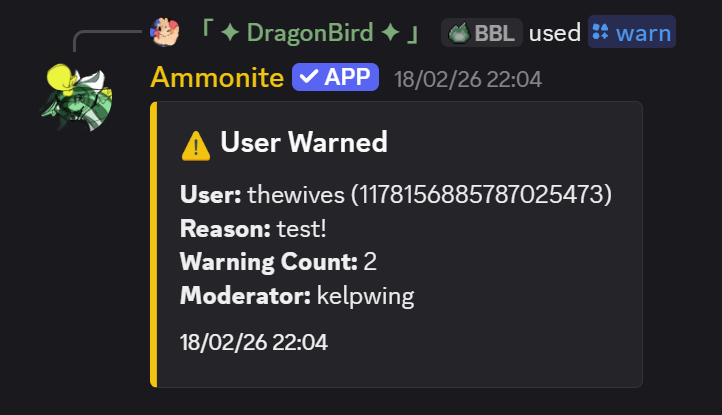
Feedback shown to the moderator executing /warn
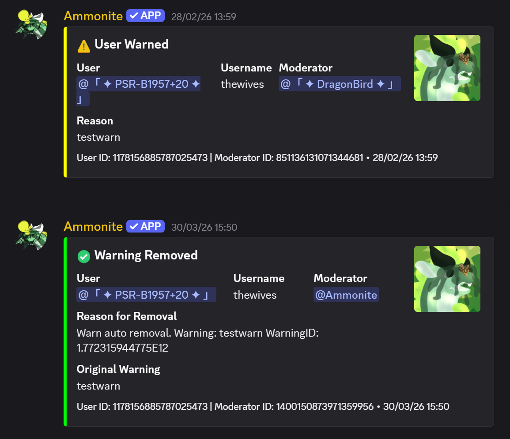
Example of an expiring warning
Syntax
Parameters
| Name | Type | Required | Description |
|---|---|---|---|
user | User | Yes | The user to remove a warning from |
reason | String | No | Reason for removing the warning |
Examples
/unwarn @John Warning was unjustifiedDetails
- Removes the most recent warning from the user's record.
- Shows the removed warning's original reason and remaining warning count.
- Logged to moderation history and AutoLog channel.
Screenshot
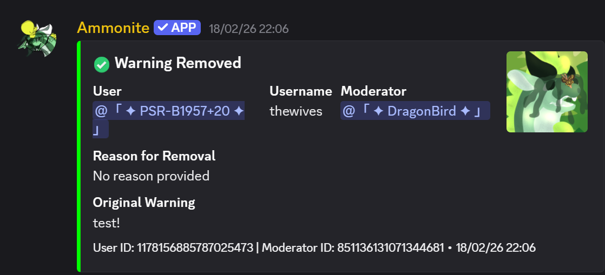
Example of the /unwarn command
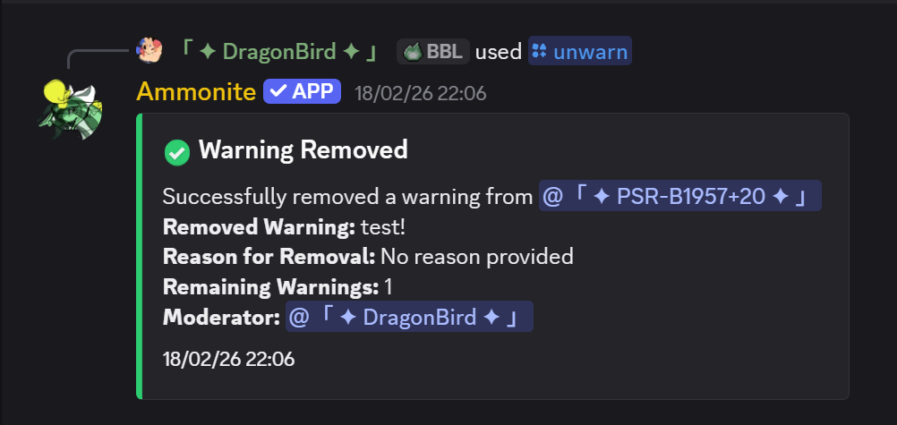
Feedback shown to the moderator executing /unwarn
Syntax
Parameters
| Name | Type | Required | Description |
|---|---|---|---|
user | User | No | User to check warnings for. Defaults to yourself |
Examples
/warns @John — View John's warnings/warns — View your own warningsDetails
- Displays each warning with the reason, moderator who issued it, and timestamp.
- Shows total warning count.
Screenshot
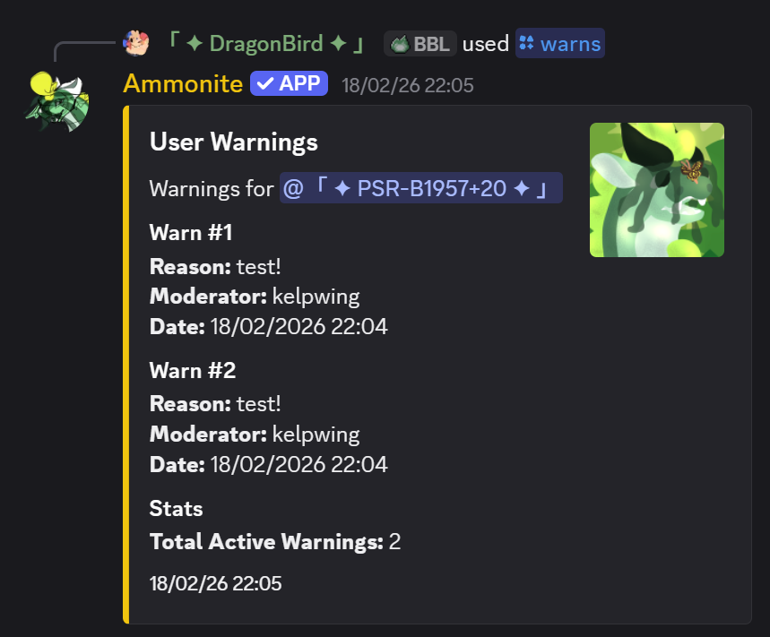
Example of the /warns command output
Syntax
Parameters
| Name | Type | Required | Description |
|---|---|---|---|
user | User | Yes | The user to mute |
duration | String | No | Duration of mute (e.g., 1h, 30m, 2d). Omit for permanent |
reason | String | No | Reason for the mute |
Examples
/mute @John 1h Inappropriate language/mute @User 30m — 30 minute mute with no reasonDetails
- Applies a mute role that removes speaking permissions.
- Timed mutes are automatically reversed when the duration expires.
- DM notification sent if punishment DMs are configured.
Syntax
Parameters
| Name | Type | Required | Description |
|---|---|---|---|
user | User | Yes | The user to unmute |
reason | String | No | Reason for unmuting |
Examples
/unmute @John Served their timeSyntax
Parameters
| Name | Type | Required | Description |
|---|---|---|---|
user | User | Yes | The user to timeout |
duration | String | Yes | Duration (e.g., 1h, 30m, 1d). Max 28 days |
reason | String | No | Reason for the timeout |
Examples
/timeout @John 1h Needs to cool downDetails
- Uses Discord's native timeout feature — the user cannot send messages, react, or join voice channels for the duration.
- Requires the bot to have the Moderate Members permission.
- Maximum duration is 28 days (Discord limitation).
Screenshot
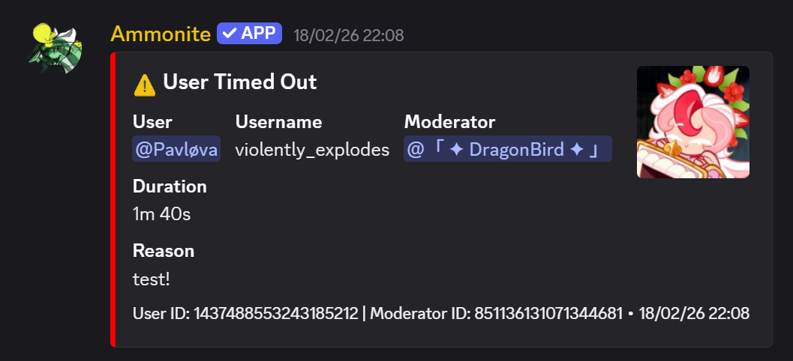
Example of the /timeout command
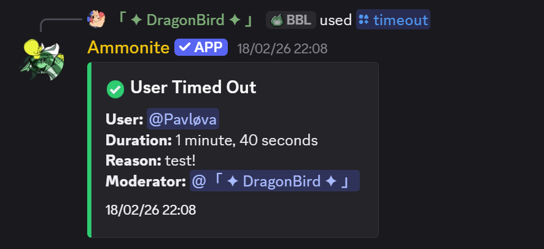
Feedback shown to the moderator executing /timeout
Syntax
Parameters
| Name | Type | Required | Description |
|---|---|---|---|
user | User | Yes | The user to view history for |
Examples
/hist @John — View John's moderation historyDetails
- Shows the last 20 moderation actions for the user (bans, kicks, warns, mutes, etc.).
- Each entry includes the action type, reason, moderator, and timestamp.
- Useful for reviewing a user's track record before taking further action.
Screenshot
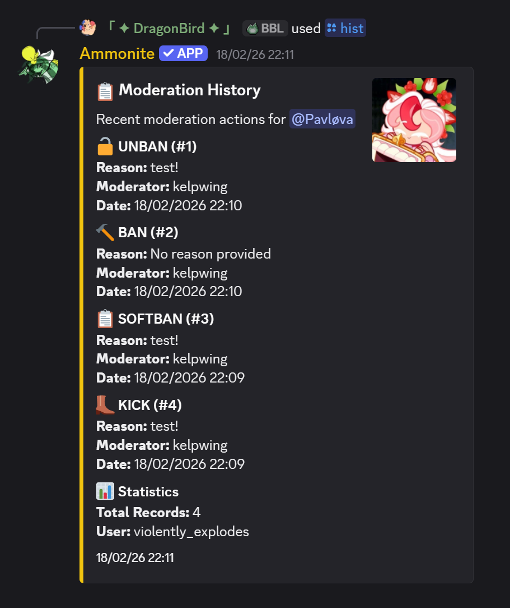
Example of the /hist command output
Syntax
Parameters
| Name | Type | Required | Description |
|---|---|---|---|
type | Choice | Yes | What to purge: messages, reactions, replies, or threads |
Examples
/purge messages — Bulk delete recent messages/purge reactions — Clear all reactions from recent messagesDetails
- Requires Manage Messages and Read Message History bot permissions.
- Messages older than 14 days cannot be bulk-deleted (Discord limitation).
Syntax
Parameters
| Name | Type | Required | Description |
|---|---|---|---|
channel | Channel | No | Channel to lock/unlock. Defaults to the current channel |
Examples
/lockdown — Toggle lockdown on the current channel/lockdown #general — Lock/unlock a specific channelDetails
- Toggles the channel's permission override for
@everyoneto deny sending messages. - Running the command again unlocks the channel.
Subcommands
| Subcommand | Description |
|---|---|
add <pattern> | Add a plain word or regex pattern to the filter (max 100 patterns) |
remove <pattern> | Remove a pattern by text, ignoring letter case |
removeat <index> | Remove a pattern by its 1-based list index |
list | Show all current filter patterns, status, and action |
clear | Remove all patterns |
enable | Enable the word filter |
disable | Disable the word filter |
action <delete|warn|delete+warn> | Set what happens when a message matches |
Notes
- Plain terms match whole words or phrases without case sensitivity. Regex metacharacters enable regex matching.
- Members with the
automod.wordfilter.bypasspermission are exempt - The master AutoMod switch in
/settingspauses the word filter along with the other checks. - Action
delete+warnremoves the message and issues an automatic warn logged to the moderation log channel
Examples
/wordfilter add badword/wordfilter add \b(bad|terrible)\s+word\b — regex pattern/wordfilter action delete+warnEconomy
Syntax
Parameters
| Name | Type | Required | Description |
|---|---|---|---|
user | User | No | User to check. Defaults to yourself |
Examples
/balance — Check your own balance/balance @John — Check John's balanceSyntax
Details
- Awards the server's configured daily reward amount.
- Can only be claimed once every 24 hours.
- The daily reward amount is configurable via
/settings.
Syntax
Details
- Generates a random job scenario and reward.
- Has a guild-specific cooldown; the reward and cooldown are saved together and survive restarts.
Syntax
Parameters
| Name | Type | Required | Description |
|---|---|---|---|
user | User | Yes | User to pay |
amount | Integer | Yes | Amount of coins to transfer |
Examples
/pay @John 500 or !pay @John 500 — Transfer 500 coins to JohnSyntax
Details
- Has a chance to succeed or fail. If you fail, you lose coins.
- You can only rob coins from a user's wallet — bank balance is protected.
Syntax
Details
- Displays a leaderboard of the richest users in the server.
Syntax
Examples
/bank balance view — View your bank balance/bank balance add user:@John amount:1000 — Admin: add 1000 to John's bankDetails
- Bank balance is protected from
/rob. - Admins can configure max loan amounts, interest rates, and auto-collection.
Syntax
Parameters
| Name | Type | Required | Description |
|---|---|---|---|
game | Choice | Yes | Game to play: blackjack, cointoss, poker, rockpaperscissors |
points | Integer | Yes | Amount of coins to bet |
Syntax
Details
- Full blackjack with Hit, Stand, and Double Down buttons.
- Interactive button-based interface.
- Standard blackjack rules and payouts.
Syntax
Syntax
Syntax
Details
- Triple match: big multiplier payout (up to 20x for rare symbols).
- Double match: smaller payout (1x-2x).
Syntax
Syntax
Syntax
Syntax
Levelling
Syntax
Details
- Shows level, XP, XP needed for next level, and server rank position.
Syntax
Details
- Displays the top users by XP in the server. Alias:
/lb
Syntax
Examples
/xp add 500 @John — Add 500 XP to John/xp set 0 @User — Reset a user's XP to 0Syntax
Examples
/level set 10 @John — Set John's level to 10Games
Syntax
Parameters
| Name | Type | Required | Description |
|---|---|---|---|
opponent | User | No | Player to challenge. Leave empty to play against the bot AI |
Details
- Full chess with move validation, check/checkmate detection.
- Interactive button interface for moves, draw offers, and resignation.
- Board rendered with text and emoji pieces.
Syntax
Details
- Five-card draw with hold/discard mechanics via buttons.
- Standard poker hand rankings and payouts.
Configuration
Syntax
Examples
/settings set daily-reward value:100 — Set the daily reward to 100 coinsDetails
- Central hub for all server configuration — economy, levelling, moderation, and general settings.
- Use
/settings toggle <feature>,/settings set <setting>, or/settings clear <setting>. Use/settings panelfor the interactive panel.
Syntax
Details
- Walks you through configuring the bot step-by-step with interactive menus.
- Covers log channels, moderation settings, economy toggles, welcome messages, and more.
- Recommended for first-time setup.
Syntax
Examples
/permissions set target:@John node:mod.ban value:true/permissions view target:@ModeratorDetails
- Supports
user,role, andeveryonetargets. - Actions:
set,remove,view. - See Permissions for the full list of nodes.
Syntax
Details
showreports the live feature switches, prefix configuration, join roles, and logging channels.reloadreloads the bot application'sconfig.jsonand is restricted to the bot owner.- Use
/automod,/antispam,/welcome, and/loggingto change the listed server settings.
Syntax
Syntax
Syntax
Types include moderation, message, member, voice, server, channel, role, emoji, sticker, and webhook. Enable the bot's View Audit Log permission to include the user and ID responsible for server changes.
Syntax
Syntax
Details
- Features: anti-spam, bad words, caps lock, repeated text, mass mentions, and link filtering.
viewshows whether the selected check and master switch are enabled, its threshold and units, and its enforcement action.- Thresholds can be set when enabling: anti-spam 1–50 messages, caps 1–100%, repeated text 2–20 messages, and mass mentions 1–30.
- Bad-word patterns and enforcement actions are managed with
/wordfilter.
Syntax
Examples
/antispam set msg-limit value:10Syntax
Examples
/welcome set message text:Welcome {user} to {server}!Details
- Use
togglefor channel/DM welcomes,setfor message, color, channel, and auto-role settings,remove auto-roleto remove a role, andtestfor previews. - Variables:
{user},{username},{server},{membercount} - Multiple auto-roles are supported — add up to 10 with
/welcome set auto-role role:@Role. Use/welcome remove auto-role role:@Roleor/welcome set clear-auto-rolesto remove roles. - Use
/welcome panelto open the interactive GUI panel.
Syntax
Subcommands
create,add,remove,list, anddeletemanage reaction-role menus.configuresets a menu role limit, configures a locked emoji, or maps an emoji to multiple roles.guiopens the interactive manager for creating, listing, configuring, and deleting menus.
Syntax
Syntax
Details
- When enabled, users receive a DM when punished with the reason, duration, and an appeal button.
Syntax
Subcommands
| Subcommand | Description |
|---|---|
add <user> | Add a user to receive suspicious-join DM alerts |
remove <user> | Remove a user from the alert list |
addrole <role> | Add a role — all members with this role will be alerted |
removerole <role> | Remove a role from the alert list |
list [page] | View the current notify list, paginated (10 per page). The server owner is always pinned at the top. |
clear | Remove all users and roles from the notify list |
test | Send a test alert to the full notify list (including role members) |
Details
- The server owner always receives alerts regardless of the notify list.
- Roles are resolved to members at alert time, so newly-added members are automatically included.
- The
listsubcommand shows paginated navigation buttons when there are more than 10 entries.
Syntax
Subcommands
enable— enable prefix commands (resets to!if none configured)disable— disable prefix commands entirelyadd <prefix>— add a new prefix (e.g.?orsb!)remove <prefix>— remove a prefix; removing the last one auto-disables prefix commandsset <prefix>— replace all prefixes with a single onestatus— show current prefixes and enabled/disabled state
Details
- Prefix commands are separate from slash commands and are disabled by default.
- Prefixes can be 1–16 characters long (no spaces, no
/). - If all prefixes are removed, prefix commands are automatically disabled.
- Re-enabling with no prefixes configured will reset to
!.
Syntax
Details
- Subcommands:
create,list,delete,restore - Backups include settings, permissions, logging config, and more.
Proxy System
Syntax
Details
- Create proxy identities that send messages via webhooks with custom names and avatars.
- Set prefix/suffix proxy tags (e.g., typing
{Hello}sends as a proxy member). - Use
/systemto organise ordered proxy members; proxied messages remain in the original thread. - See Proxy Features for a full guide.
Syntax
Details
- Shows your systems and their ordered proxy members.
- Use
/system listto inspect members in a specific system.
Syntax
Details
- Use
switch <member>to auto-proxy all messages as a specific member.
Syntax
Details
- No argument = toggle current state.
- Set to
trueorfalseto enable/disable. - Use
/proxysettings autoproxyfor advanced mode selection.
Examples
/autoproxy — toggle/autoproxy enabled:true — enableTickets
Syntax
Details
- Subcommands:
create,close,add,remove,panel,settings,categories - Ticket panels let users open tickets with a button click.
- Categories allow organizing different types of support requests.
- Transcript logging available for closed tickets.
Global Chat
Syntax
Subcommands
| Subcommand | Description |
|---|---|
create | Create a new global chat channel (name, description, visibility, key) |
edit | Edit an existing global chat channel's properties |
delete | Delete a global chat channel you own |
link | Link a server channel to a global chat |
unlink | Unlink a server channel from its global chat |
info | View info about a global chat channel |
list | List your global chat channels |
setrules | Set rules for your global chat channel |
manage | Open the management panel (DM only) |
kick | Kick a server from your global chat |
ban | Ban a server from your global chat |
unban | Unban a server |
warn | Warn a server |
unwarn | Clear warnings for a server |
mute | Mute a server (with optional duration) |
unmute | Unmute a server |
addmod | Add a moderator to your channel |
removemod | Remove a moderator |
addcoowner | Add a co-owner to your channel |
removecoowner | Remove a co-owner |
transferowner | Transfer channel ownership |
servers | List servers linked to a global chat |
editjoin | Configure join messages (enable, type, title, plaintext) |
editleave | Configure leave messages (enable, type, title, plaintext) |
Examples
/globalchat create name:Lounge description:A chill cross-server chat/globalchat link channelid:abc123 channel:#globalDetails
- Messages relay across servers via webhooks. See Global Chat Features for full details.
Utility
Syntax
Details
- Without arguments: shows all commands by category.
- With a command name: shows detailed help for that specific command.
Syntax
Syntax
Syntax
Syntax
Parameters
| Name | Type | Required | Description |
|---|---|---|---|
message | String | Yes | The text to send (max 2000 chars) |
channel | Channel | No | Target channel (defaults to current) |
embed | Boolean | No | Send as an embed instead of plain text |
Examples
/echo Hello World/echo Welcome to the server! embed:trueRelated
- Prefix:
!echo <message>— the command message is automatically deleted. If you reply to a message with!echo, the bot will send the text as a direct reply to that message. - Context menu: Right-click any message → Apps → Echo Message to re-send its content to the same channel.
Syntax
Parameters
| Name | Type | Required | Description |
|---|---|---|---|
json | String | Yes | Discord-compatible embed object, embed array, or message payload containing up to 10 embeds. Button components are supported. |
channel | Channel | No | Destination channel (default: current channel) |
Examples
/embed json:{"embeds":[{"title":"Welcome","color":5793266},{"description":"Read the rules first."}]}Parameters
| Name | Type | Required | Description |
|---|---|---|---|
channel | Channel | No | Channel to send the message to (default: current) |
Controls
- Add, remove, and navigate between up to 10 embeds in one message
- Set title, description, color, author, footer, image, thumbnail, fields, timestamps, and buttons
- Export JSON — export a Discord message payload compatible with
/embedand/talkas - Import JSON — load a Discord message payload or embed array into the builder
Examples
/embedgui/embedgui channel:#announcementsSyntax
Provide a message, embed JSON, or both. embed_json accepts a Discord message payload with multiple embeds and button components.
Example
/talkas name:Announcements embed_json:{"embeds":[{"title":"Update","description":"New information"}]}Syntax
Syntax
Options
| Name | Type | Required | Description |
|---|---|---|---|
flag | String | Yes* | Pride flag to apply (not needed if custom_flag is used). Has autocomplete. |
user | User | No | User for avatar overlay (default: you) |
image_url | String | No | URL of an image to overlay |
image | Attachment | No | Upload an image file to overlay |
custom_flag | Attachment | No | Upload a custom flag image (replaces built-in flag) |
style | String | No | How to apply: border (default) or overlay |
border_style | String | No | Shape when style=border: circular (default) or frame |
border_thickness | Integer | No | Border thickness in pixels (5–512, default: 50) |
opacity | Integer | No | Overlay opacity in percent (1–100, default: 40, overlay only) |
Examples
/pride flag:trans — Apply trans flag border to your avatar/pride flag:pride user:@friend style:overlay opacity:60 — Pride flag overlay on a friend's avatar/pride flag:lesbian image_url:https://example.com/img.png style:border border_style:frame border_thickness:30/pride custom_flag:<upload> image:<upload> style:overlay — Use a custom flag design on an uploaded imageDetails
- If no user/image/image_url is specified, applies to your own avatar.
- Built-in flags are loaded from the bot's assets — use
/flagsto see all available. - Upload a
custom_flagto use any image as the flag pattern instead of built-in flags. - User-installable — works in DMs and group chats when Ammonite is installed to your account.
Syntax
Syntax
Syntax
Syntax
Syntax
Examples
/error category:S — View settings error codesDetails
- Categories range from A to W, each covering a different area of the bot.
Syntax
Syntax
Details
- Use
/deletedataor!deletedata; both use the same confirmation step. - Progress is saved by category. Confirm again after a failure to resume pending categories.
- Completed deletion cannot be undone.
Context Menu Commands
Right-click (or long-press on mobile) a message or user → Apps to access these commands.
How to use
Right-click any message → Apps → Echo Message.
Details
- Requires the
utility.echopermission (same as/echo). - Sends the selected message's plain text content to the current channel.
- Only guild channels are supported — not usable in DMs.
How to use
Right-click any message → Apps → Report Message.
Details
- No special permissions required — any server member can use this.
- Sends a report embed to the configured log channel (
/log channel). - Report includes: reporter, message author, channel, message content, and a jump link.
- If no log channel is configured, the user is notified to ask an admin to set one up.
How to use
Right-click any user → Apps → Get Avatar.
Details
- No special permissions required.
- Returns the avatar at up to 4096 px. Animated avatars include links to both GIF and PNG versions.
- User-installable — works outside of servers (DMs, group chats) when you install Ammonite to your account.
- Also available as the slash command
/avatar [@user].
How to use
Right-click any user → Apps → Quick Warn.
Details
- Requires the
mod.warnpermission. - Increments the user's warning count and fires the same DM notification as
/warn. - Reason is automatically set to "Warned via context menu by <moderator>".
- Respects role hierarchy — cannot warn users with equal or higher roles.
- For a custom reason, use
/warn <user> [reason]instead.
How to use
Right-click any user → Apps → Quick Kick.
Details
- Requires the
mod.kickpermission. - Logs the action to the configured mod log channel via AutoLog.
- Sends a punishment DM if enabled.
- Respects role hierarchy.
How to use
Right-click any user → Apps → Quick Ban.
Details
- Requires the
mod.banpermission. - Issues a permanent ban and deletes messages from the last 7 days.
- Logs the action and sends a punishment DM if enabled.
- For timed bans, use
/ban <user> [duration] [reason]instead.